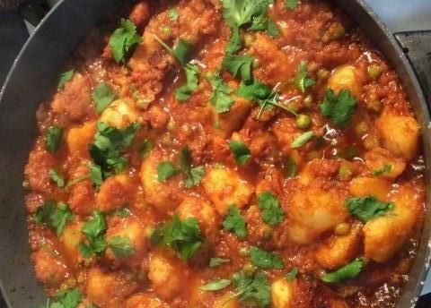

Potato and Peas Curry

Description
The inspiration for this dish comes from my friend Nidhi, whom I met at auditions for a cooking show.
I created this simple curry by combining Indian flavours and my boys love of potato and peas.
Ingredients
- 1 kg potatoes cubed peeled
- 3 tbs vegetable oil
- 1 tsp turmeric
SAUCE
- 3 tbs vegetable oil
- 1 onion finely chopped
- 5 garlic cloves chopped
- 2 tsp curry powder
- 250ml Massel* Vegetable Liquid Stock
- 200 g tomato passata
- 200 g frozen peas
- 1 cup coriander chopped *to garnish
- Place potatoes in boiling, salted water and cook for 10 minutes until tender. Drain.
- In a large frypan, heat oil, then add potatoes and fry until golden. Add turmeric and set aside.
- In another frypan, heat oil, then add onion and garlic, and cook until tender. Stir in curry powder, passata, vegetable stock and peas. Cook for a further 10 minutes.
- Pour sauce over potatoes and cook over a gentle heat for 5 minutes, adding splashes of stock to stop the food catching at the bottom of the pan.
- Garnish with coriander and serve.